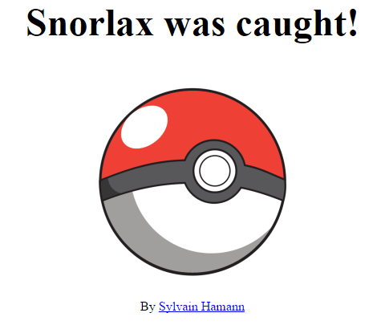
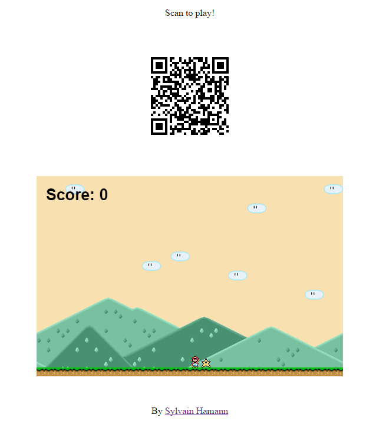

“The WebSocket specification defines an API establishing "socket" connections between a web browser and a server. In plain words: There is an persistent connection between the client and the server and both parties can start sending data at any time.”
“Socket.IO is a JavaScript library for realtime web applications. It enables realtime, bi-directional communication between web clients and servers. It has two parts: a client-side library that runs in the browser, and a server-side library for node.js”
*Server is omitted
One room = One unique id
Displays the QR Code and Pokemon data.
Loaded via the QR code, it will connect to the right room.
Clicking on the button will send a catch event.
The server forwards the event to the main client.

